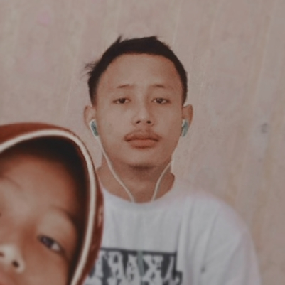

MY CURRICULLUM VITAE
[ Identitas Diri]
[ Riwayat Pendidikan]
[ Pengalaman Organisasi]
[ Prestasi Yang Pernah Diraih]
[ Hobi Yang Ditekuni]

Seorang mahasiswa yang sedang menempuh jenjang pendidikan S-1 program studi
Sistem Informasi Kelautan dan aktif dalam mengikuti unit kegiatan mahasiswa yang
ada di universitas dan siap meningkatkan taraf hidup agar menjadi pribadi yang lebih
baik daripada sebelumnya
Usaha adalah salah satu hal yang lebih besar daripada hasil
Hidup Mulia atau Mati Syahid
Identitas Diri
- Nama : Pardip Maulana
- Tempat, Tanggal Lahir : Serang, 10 Juni 2002
- Jenis Kelamin : Laki-laki
- Alamat : Kp. Samparwadi, Rt/Rw:002/001 Ds. Puser, Kec. Tirtayasa, Serang, Banten
- Nomor Telepon : 085773844484
- E-mail : pardipmaulana001@gmail.com
Riwayat Pendidikan
- SD : SD Negeri Samparwadi 2
- SMP : SMP Negeri 1 Tirtayasa
- SMA : SMA Negeri 1 Tirtayasa
- S1 : Universitas Pendidikan Indonesia
Pengalaman Organisasi
- Ketua OSIS SMA Negeri 1 Tirtayasa 2018-2019
- Anggota Paskibra Kabupaten Serang 2018
- Anggota Saka Bhayangkara Polres Serang 2018
Prestasi Yang Pernah Diraih
- Perwakilan Kabupaten Serang dalam Lomba Pelajar Pelopor Tahun 2019
- Siswa Peringkat 1 SMA Negeri 1 Tirtayasa Tahun 2019
Hobi Yang Ditekuni
- Olah Vokal
- Berenang
- Menembak Menggunakan Airsoft